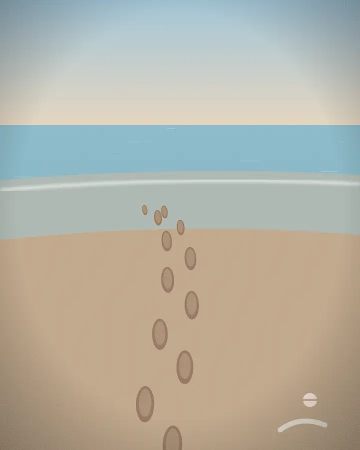

Photograph
- Place
- Light
- Lens
We will write to within two days with dates that suit the light.
Two hours on foot with one of us, any camera welcome. We stop where the light is good and talk about why.
The studio
We are two photographers in a net loft on the quay. Sessions happen by the window or on the harbour wall, prints are made in the back room, and the kettle is always on.
Tidewell Studio
Portraits, harbour prints and Saturday walks.
Net loft 4, the quay, Merrow Bay. Thursday to Sunday.
Prints
Archival pigment prints on matt cotton paper, made in the back of the studio and posted flat.
Harbour
Pigment inks on 310 gsm matt cotton rag, with a 3 cm white border for framing. Each print is signed on the back and numbered in an edition of 50.
Printed to order within five working days and posted flat between boards. Tracking comes by email.
If a print arrives damaged, send us a picture of it within 14 days and we will print it again.
The invoice with delivery goes to within one working day. Pay it and we start printing.
Photo walks
Small groups of eight. We meet at the harbour steps, walk at an easy pace and stop wherever the light asks us to.
Walks cost $25 and are paid on the day. If the weather turns, we move the walk and tell you the evening before.
A place is held for . Directions and a kit list go to .
Journal
How we light, print and walk, written down so we stop explaining it twice.
About
Tidewell started in a net loft on the quay at Merrow Bay. Mara makes the portraits; Oren prints them and runs the walks.
We photograph people where they already feel at home: on the harbour wall, by the north window, on the bench they have used for years. We plan sessions around the tide and the weather, not the clock.
Portraits and family sessions
Prints and Saturday walks
A short call about who will be in the pictures and where they feel easy.
Morning by the window, or the hour before sunset on the wall. We check the tide.
A private gallery within a week, and prints made here if you want them.
Thursday to Sunday, 10:00 to 17:00. Net loft 4, the quay.
Contact
Usually within two days. For a session, tell us who will be in it and roughly when.
Thank you, . We will reply to within two days.
Photographs and prints you marked, kept in this browser only.
Questions
About an hour, most of it talking. Families with small children get ninety minutes, because someone always needs a snack.
$180, which includes a private gallery of about thirty pictures. Prints are extra and made here.
We move indoors to the window, or pick another day. Rain on the harbour wall can be lovely, so we may ask you to come anyway.
Yes. Share them wherever you like; a mention is kind but never required.
Flat, between two boards, with tracking. Larger sizes go by courier.
No. Half the group usually brings a phone. The walk is about where to stand and when to wait.
Last updated 1 November.
Your name and email when you book, order or write to us, and the pictures from your session. Saved photographs and your bag stay in your own browser.
We use it to answer you, deliver your gallery and prints, and send the tide letter if you ask for it. We never sell it or share it for advertising.
We only show a session in our work with written permission, and we take it down when you ask.
Last updated 1 November.
Move a session up to 48 hours before at no cost. After that, the deposit covers the time we kept for you.
Prints are made to order. We replace any print that arrives damaged.
We keep the copyright in our photographs. Your session pictures come with a licence for personal use, including posting online.

The link may be old, or the page may have moved.
Back to the quay